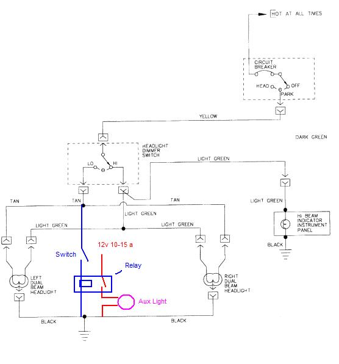

Go Home
Site Map
Go Home
Site Map
Fog/Driving lights wiring
This allows Halogen Fog/Driving lights on only with low beam headlights. You can be ticket magnet if Fog/Driving lights are On without low beam HL. Some states allow Fog lights only when driving in Fog and Low beam HL is on. (Most LED units draw less power and many can tap the low beam without relay etc.)
Run power wire to battery or main terminal under C500. New wire should be 10-12 awg with its own fuse.
